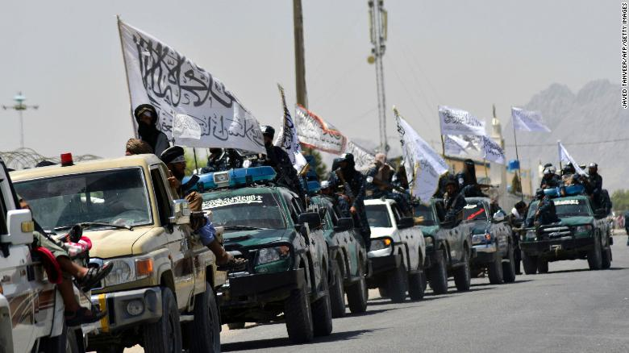
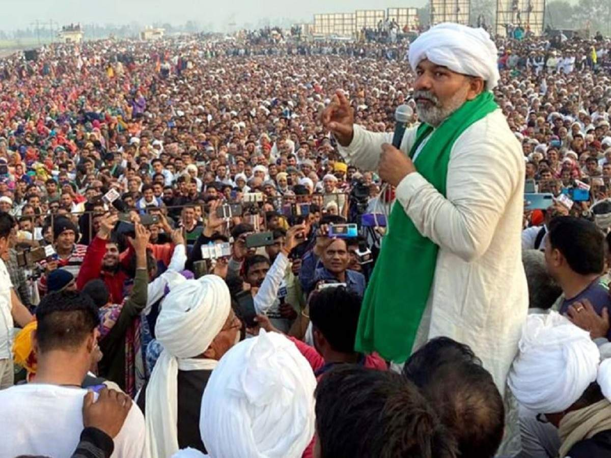
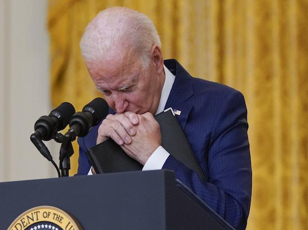

Pakistan 'Helping' Taliban Fight Panjshir Resistance, 'Airdrops Special Forces'
-
Pakistani forces are aiding the Taliban in their fight against the last remaining foothold of opposition Panjshir Valley, sources close to the resistance headquarters have told CNN-News18.
-
Pakistan is providing air support to Taliban fighters in Panjshir, the sources said, adding that some Special Forces have been airdropped to fight the Resistance
-
The sources said all major supplies and roads have been blocked by the militant group. Both sides - Taliban and Panjshir resistance - have sustained major casualties in the ongoing operations, they added. Yesterday, ISI Chief Hameed Faiz had extended his support to the Taliban, in a visit to Kabul.

Why is ISI chief in Kabul? Afghan politician says 'to stop Mullah Baradar'
-
Pakistan ISI chief Lieutenant General Faiz Hameed said ‘everything will be okay’ as he landed in Kabul on Saturday for a discussion on the new government in Afghanistan. The Taliban, on the other hand, postponed the announcement of their government formation.
-
Pakistan media reported that the ISI chief was invited by the Taliban leadership to discuss the soon-to-be-formed government.
-
However, insiders said that the visit was to push for the Haqqani group in the government. For the last few days, hectic negotiations were going on between the Taliban leadership and the Haqqani network over the formation of the government.

Hundreds of thousands of Indian farmers rally against farm laws
-
Hundreds of thousands of farmers gathered in India's most populous state Uttar Pradesh on Sunday, the biggest rally yet in a months-long series of demonstrations to press Narendra Modi's government to repeal three new agricultural laws.
-
More than 500,000 farmers attended the rally in the city of Muzaffarnagar, according to local police.
-
"We'll intensify our protest by going to every single city and town of Uttar Pradesh to convey the message that Modi's government is anti-farmer," he added.
Trinamool Congress fields Mamata Banerjee for Bhabanipur by-election
-
The Trinamool Congress on Sunday announced that West Bengal Chief Minister Mamata Banerjee will contest the upcoming by-election from the Bhabanipur assembly constituency.
- Along with Banerjee, Jakir Hossain will contest from Jangipur constituency while Amirul Islam will fight the poll from Samserganj constituency, AITC said in a statement.

Where does Biden stand in approval rating among world leaders? Not above Modi, Merkel
-
Several polls have shown that the approval rating of US President Joe Biden has significantly dropped after the troops’ withdrawal from Afghanistan
-
Biden, whose approval rating remained over 50% since he took the office in January, is now looking at an approval rating of 48%, an all-time low in few months of his presidency.
-
The fall in Biden’s approval rating has pushed him below German chancellor Angela Merkel on the list of global leaders’ approval. With a 70% approval rating, Prime Minister Narendra Modi remains the most popular leader among adults, followed by Mexican President Andrés Manuel López Obrador (64%), Italy’s Mario Draghi (63%), and Merkel (52%).